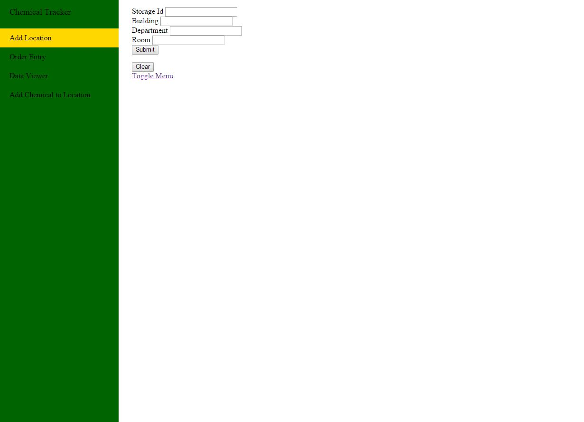

Portfolio
Here I will show off some of my major projects that I have created during my time at Slippery Rock University. I will provide some technical details as well as some pictures that represent the projects. Please click on each title to show details. If you have any questions, feel free to contact me
Education Placement Project (current project)
This project is a project that is directed towards the Special Education Department here at Slippery Rock University and being completed in my Software Engineering class (capstone class). The main idea of this project is to learn the Software Development lifecycle and to experience each step. The project is being completed in a group of 4, and we are looking to leave this project working with the Special Education Department when we leave.
This software product is going to be used to place students in their out of class placements (within the districts around the Slippery Rock area). We thought of this project because the way that they do it now is all by hand. The first thing that the placement director has to do is send a piece of paper to each student and have the place there regions in order from 1 to 6 on where they would like to be placed. After that is filled out they give it back to the placement director and then it is his job to choose the placements. He puts students in 6 piles based on their choosings and after the schools reply with how many students they would like, the placement director goes through and handpicks the placements. We thought that this would be a much easier process to modify in the following ways
- Create an administrator windows application used to input the students and schools into a MySQL database
- Create a web interface used by the students to select their preferences remotely(no paper required)
- After a certain date, the placement director presses a button on the administrator window and the placements are generated
Here is a list of some of the technical details of our project (please keep in mind that this is a ongoing project, so any of these details can change periodically)
- The administrator Windows application is created within c#
- There will be multiple ways for a administrator to input infomation
- Inputting directly by hand
- Using NPOI to import from an excel document
- The web application will combine HTML, Javascript, and PHP to have the students input their selections
- MySQL is used for a databaseto keep track of students and schools
- After the program selects the placements, it will output an excel document based on the placement directors specifications
Chemical Tracking Project(current project)
This project is a project that I am doing on my own for Slippery Rock University. This project was started by Eric Corrado and when he graduated, my professor passed it onto me. The main idea of this project is to keep track of the chemicals that are stored on Slippery Rock's campus. This is an ongoing project, but so far I have made a great deal of progress
Technical details below,
- The application is written in majorly HTML,CSS,Javascript (JQuery) and some Bootstrap API
- But underneith the surface, is Java. Using JSP and Servlets to process the requests and getting/sending the infomation to the database
- MySQL database is used to keep track of the chemicals and the locations
- Use of Tomcat Eclipse Plugin
Below are some pictures of the software as it is now. Please keep in mind this is a in progress applicaiton and I still need to do things like style and create some functionality
Vehicle Routing Problem with Backhauls
This was a group project without our Operating Systems class. The main idea of this projet was to understand the concpets of routing and implementing different heuristics to get the best possible solution. A Vehicle Routing Problem(VRP) is a NP Complete problem, meaning that there is no "Best" solution. A Vehicle Routing Problem with Backhauls (VRPB) includes pickups in the pickup delivery scenario. While working on the project, we came up with two different ways to "solve" this problem. The first was where the pickup contents can be reused for dropoffs. The second way was the absolute opposite, pickup contents are not used for dropoffs, but the truck has to go back to the depot when full.
Technical details
- There were two different sets of heuristics
- Selection Heuristics(how to select which locations to go to first)
- Smallest Polar Angle
- Scans around the depot and finds the polar angle assoicated with the shipment
- Places shipments in order from least angle to greatest angle
- Closest Euclidian Distance to Depot
- Smallest Polar Angle Shortest Distance to Depot
- Scans around the depot and finds the polar angle assoicated with the shipments
- Places shipments in order from least angle to greatest angle, while taking into account the distance from the depot
- Places the shipments in order by polar angle, but the closest shipments to the depot get placed first
- Insertion Heuristics(how to select which truck would fit the route)
- Linear Greedy
- Insert the shipment into each truck to see which truck is more cost effective for the shipment
- Created within Java
- GUI made by Java Swing
- POI was used for Excel input and output
- Presented this project at an Undergrad Conference at Slippery Rock University
Images from the Undergrad conference, these images consist of backhauls being resued as demand for the linehauls

Images from when the project was turned in, not reusing backhaul demand for linehauls
Genetic Algorithm
This project was a genetic algorithm made for our Advanced Archetecure and Parallel class. The main idea of this project was to create the project without using multithreading and then after it was created, multithread it and get as much as a speedup as possible. This was a group project of three people
Some technical details
- Created using c++
- Used OpenMp to paralellize
- We did two tests
- The first test was in debug(no optimization),serially our code took 47.29 mins to run, but with some OpenMP parallel statements it only took 14.14 mins to complete
- The second test was in release mode(o2 optimization), serially it took 30.933 mins, but with the same OpenMP parallel statements it only took 9.33 mins
This is the main speedup section in our program. We did not have to do too much with this section becasue everything is created on each thread.